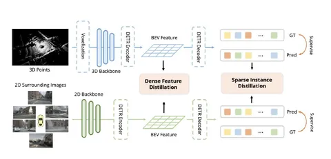
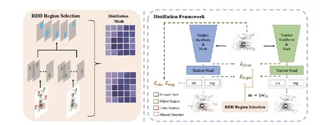

Разные сенсоры автономного транспорта дают модели неоднородную информацию о сцене: лидар — разреженную геометрию, камеры — плотное визуальное представление. Сегодня разберём сразу две статьи о том, как в таком случае дистиллировать модели для задач 3D-детекции.
BEVDistill: Cross-Modal BEV Distillation For Multi-View 3d Object Detection
Фреймворк BEVDistill решает две важные проблемы дистилляции в BEV:
Для этого авторы предлагают два взаимодополняющих компонента.
Первый, Dense Feature Distillation, фокусирует студента на областях BEV-карты, которые содержат критически важную информацию о реальных объектах. Это достигается путём построения гауссиан вокруг центров GT 3D-боксов.
Гауссианы объединяются в карту весов, где ячейкам вблизи объектов присваиваются высокие значения, а фоновым областям — низкие. Эта карта взвешивает лосс между BEV feature maps учителя и студента и способствует тому, что студент внимательнее согласовывает свои признаки с учителем именно в релевантных для объектов локациях.
Второй, Sparse Instance Distillation (SID), решает проблему потенциального вреда от дистилляции на основе ошибочных предсказаний учителя. SID сознательно фокусируется не на всех предсказанных учителем объектах, а только на надёжных.
Для предсказаний вычисляются веса, и дистилляционный лосс взвешивается этими значениями. Это гарантирует, что студент учится перенимать паттерны только из корректных предсказаний учителя, меньше обращая внимание на его ложные срабатывания.
Рассмотреть весь фреймворк можно на первой схеме, познакомиться с решением поближе — на GitHub авторов.
Representation Disparity-aware Distillation for 3D Object Detection
Авторы этой статьи подводят нас к проблеме селективности в дистилляции с другой, более фундаментальной стороны. Они сосредоточились на явлении рассогласования представлений (representation disparity) — различиях в распределениях признаков учителя и студента.
Стандартная дистилляция не учитывает, что это рассогласование неоднородно по пространству feature map. Ключевая идея RDD — явно измерить локальное расхождение (disparity) между признаками учителя и студента в областях предсказаний (в областях, где был предсказан объект).
На второй схеме видно: области с высоким значением указывают на значительное несоответствие, означающее, что студенту сложнее перенять знания учителя именно в этих местах. RDD использует эти веса для дистилляционного лосса, что фокусирует обучение на тех зонах, где студент сильнее всего отклоняется от учителя.
Авторы утверждают, что на момент выхода статьи их подход позволил повысить mAP для CP-Voxel-S с 54,0% до 57,1% на датасете nuScenes. Этот результат лучше, чем у модели-учителя, хотя cтудент использует лишь около 41,6% её FLOPs.
Разбор подготовила
404 driver not found

